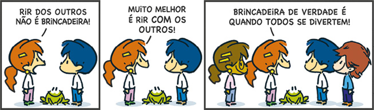

Os conectivos são elementos essenciais para estabelecer relações de sentido em um texto.
Linus Schütz/Pixabay
Certamente, você já ouviu que um bom texto apresenta coesão e coerência e que, para isso, é necessário articularmos, de modo lógico, as ideias apresentadas de acordo com a finalidade comunicativa e com o nosso interlocutor. Para que essa construção textual seja possível, é fundamental o uso de recursos linguísticos que nos auxiliem a estabelecer relações entre palavras e sentenças.
Alguns desses recursos dependem do uso de certas palavras que atuam justamente na organização sintática das informações contidas em nossos textos. Assim, neste capítulo, estudaremos as preposições e as conjunções, que são classes gramaticais fundamentais para a articulação textual, responsáveis por tornar os textos claros e coerentes, com ideias coesas e lógicas. A imagem acima traz uma representação simbólica do que são conexão e finalidade. Observe-a e responda às questões a seguir.
- Qual é o elo estabelecido na imagem? Interprete o sentido construído por ela.
- Que tipos de palavra em língua portuguesa são como “elos” entre palavras e sentenças?
Neste capítulo, serão abordadas as habilidades EM13LP01,, EM13LP02,, EM13LP06,, EM13LP08.,.
Para construir sentido em nossos textos, é necessário que haja relações lógicas entre palavras, sentenças e blocos de texto. As preposições e conjunções atuam justamente no estabelecimento dessas conexões, sendo, por isso, denominadas de classes relacionais. Por esse motivo, elas não exercem propriamente uma função sintática e são demarcadas como conectivos.
Vamos analisar o artigo jornalístico a seguir. Nele, várias preposições e conjunções foram omitidas. Leia-o e faça o que se pede na sequência.
Bioenergia pode ajudar ______ mitigar as mudanças climáticas, reconhece IPCC
A bioenergia pode ajudar ______ mitigação das mudanças climáticas globais contribuindo______ diminuir a queima de carvão, petróleo e gás natural ______ geração de energia ______ consequentemente, reduzindo a emissão ______ gases de efeito estufa ______ a atmosfera. Pesquisadores brasileiros ______ estrangeiros que têm estudado o assunto defendem ser possível expandir o uso de bioenergia ______ degradar o solo, comprometer a segurança alimentar ______ os recursos hídricos.
O tema foi abordado ______ Painel Intergovernamental sobre Mudanças Climáticas (IPCC, ______ sigla em inglês) ______ Organizaçãodas Nações Unidas (ONU) ______ seu mais recente relatório especial, lançado no dia 8 de agosto ______ o tema “Mudanças climáticas e uso da terra”, e ______ seu respectivo sumário ______ os formuladores de políticas. A abordagem do relatório sugere que, ______ cientistas ______ negociadores de governos, o antagonismo ______ a produção de biocombustíveis e o cultivo de alimentos começa ______ se dissipar.
O documento reconhece, por exemplo, que o uso da bioenergia, juntamente ______ a redução ______ desmatamento de florestas tropicais ______ o replantio de vegetação nativa ______ sequestrar e retirar dióxido de carbono (CO2) da atmosfera, pode ajudar ______ limitar o aquecimento global a 1,5 °C ______ bem abaixo de 2 °C nas próximas décadas.
ALISSON, Elton. Agência FAPESP, 20 ago. 2019. Disponível em: <http://agencia.fapesp.br/bioenergia-pode-ajudar-a-mitigar-as-mudancas-climaticas-reconhece-ipcc/31251/>. Acesso em: 26 jul. 2021.
- Tente complementar o texto com palavras que
- auxiliem na coesão das ideias.Compare o texto original com a sua versão e verifique pontos comuns e diferentes.
Preposição: conceito e classificação
Preposições são palavras invariáveis cuja finalidade é atuar como conectivo entre dois termos, construindo sintagmas coesos e coerentes. Leia a tira a seguir.
As preposições podem interferir no sentido de uma sentença.
Armandinho, de Alexandre Beck
A tira traz duas construções com o verbo “rir”: “rir dos outros” e “rir com os outros”. Esse verbo pode ser transitivo indireto, exigindo complemento verbal com uso da preposição, ou intransitivo, quando não exige complemento. Observe:

Nesse caso, além de estabelecer a coesão adequada entre verbo e complemento e entre verbo e adjunto adverbial, a preposição também interfere no sentido construído, sendo, por isso, o recurso estilístico empregado na tira. Em “rir dos outros”, o verbo é transitivo indireto, cujo sentido é zombar de alguém; já em “rir com os outros”, é intransitivo e o sentido passa a ser divertir-se junto com outra pessoa.
Na tira, também encontramos a expressão nominal “brincadeira de verdade”, em que “de verdade” é uma locução adjetiva. A preposição “de” une-se ao substantivo “verdade” para construir uma expressão modificadora.
A preposição pode ligar termos de categorias gramaticais iguais, como ocorre entre dois substantivos em “brincadeira de verdade”, e de categorias gramaticais diferentes, como em “rir dos outros”, na conexão entre verbo e pronome indefinido. Nessa relação entre dois termos, o que antecede a preposição é chamado de subordinante , e o que a sucede recebe o nome de subordinado .
O termo subordinante pode ser um substantivo (“ palácio de cristal”), um verbo (“ preciso de você”), um adjetivo (“ difícil de engolir”), um pronome (“ alguém de vocês”), um advérbio (“ depois de amanhã”) e, mais raramente, uma interjeição (“ ai de nós!”). Já o subordinado pode ser substantivo (“palácio de cristal ”), adjetivo (“espaço para novatos ”), verbo no infinitivo (“gostou de ir ”) ou advérbio (“no país de hoje ”). Por causa dessa variabilidade de combinações, as preposições podem participar de diferentes construções, com distintas funções sintáticas. Leia alguns exemplos na tabela a seguir.
| Sentença | Preposição na construção do |
|---|---|
| Maria não gosta de despedidas . | objeto indireto |
| João teve o desejo de partir . | complemento nominal |
| Ele partiu com rapidez . | adjunto adverbial |
| A partida de João causou comoção. | adjunto adnominal |
| A festa de despedida foi organizada por Maria . | agente da passiva |
Preposições essenciais, acidentais e locuções prepositivas
Preposições essenciais são palavras que funcionam exclusivamente como preposição: “a”, “ante”, “até”, “após”, “com”, “contra”, “de”, “desde”, “em”, “entre”, “para”, “perante”, “por”, “sem”, “sob”, “sobre”, “trás”. Veja os exemplos:
Já as preposições acidentais são termos oriundos de outras categorias gramaticais que, em determinados contextos, passam a atuar como preposições, por exemplo: “durante”, “exceto”, “feito”, “fora”, “mediante”, “salvo”, “senão”, “segundo” etc. Acompanhe os exemplos a seguir.
As preposições essenciais podem se unir a outras palavras, originando locuções prepositivas , ou seja, uma unidade linguística maior com valor de preposição. Em geral, essas locuções são formadas com o acréscimo de uma preposição a um advérbio ou a uma locução adverbial. Exemplos: “abaixo de”, “acima de”, “acerca de”, “a fim de”, “além de”, “antes de”, “ao lado de”, “ao longo de”, “apesar de”, “atrás de”, “dentro de”, “depois de”, “embaixo de”, “em vez de”, “junto de”, “por meio de”, “devido a”, “em relação a”, “de acordo com”, “para com” etc. Veja:
Conforme já estudamos, a crase é a contração da preposição “a” com o artigo “a(s)”, sendo demarcada pelo uso do acento grave: “à(s)”.
A contração com acento grave também se dá entre a preposição “a” e a vogal “a” que inicia os pronomes demonstrativos: a + aquele(s) = àquele(s); a + aquela(s) = àquela(s); a + aquilo = àquilo.
Contração e combinação de preposições
As preposições podem combinar-se ou contrair-se com outras palavras. A combinação é a junção de uma preposição a outro termo sem que se reduzam ou se alterem as palavras (exemplo: a [preposição] + o [artigo] = ao). A contração, por sua vez, implica algum tipo de redução (exemplo: a [preposição] + a [artigo] = à). Observe a tabela a seguir.
| Contração ou combinação | Exemplos | |
|---|---|---|
| A | + artigos definidos | Ao(s); à(s). |
| + pronomes demonstrativos | Àquele(s); àquela(s); àquilo. | |
| De | + artigos definidos e indefinidos | Do(s); da(s); dum(ns); duma(s). |
| + pronomes pessoais, demonstrativos e indefinidos | Dele(s); dela(s); daquele(s); daquela(s); daquilo; desse(s); dessa(s); disso; deste(s); desta(s); disto; doutro(s); doutra(s). | |
| + advérbios | Daqui; dali; acolá; daí. | |
| Em | + artigos definidos e indefinidos | No(s); na(s); num(ns); numa(s). |
| + pronomes pessoais e demonstrativos | Nele(s); nela(s); naquele(s); naquela(s); naquilo; nesse(s); nessa(s); nisso; neste(s); nesta(s); nisto. | |
| Por | + artigos definidos | Pela(s); pelo(s). |
Valores semânticos das preposições
De modo isolado, as preposições são palavras desprovidas de significação, pois é justamente ao estabelecerem conexões entre distintos termos sintáticos que elas demarcam seu valor semântico. Acompanhe:
Nesses exemplos, a preposição “sobre” assinala o assunto sobre o qual se falou; “em” indica lugar, origem da ligação; e “a” sugere o direcionamento, ou seja, a quem a fala estava dirigida. Há inúmeras possibilidades de construção de sentido com as preposições. Veja a tabela a seguir.
| Valores semânticos | Exemplos |
|---|---|
| Assunto | Nós conversamos sobre trabalho. |
| Causa | Por ser feriado, a cidade está vazia. |
| Companhia | Estamos aqui com toda a equipe. |
| Direção | Minha mala foi encaminhada a outra cidade. |
| Distância | Daqui a duas quadras, você encontrará uma farmácia. |
| Finalidade | Infelizmente, viajamos para trabalhar, e não para descansar. |
| Instrumento | Com uma tesoura, faça o acabamento do convite. |
| Limite | Ficaremos na cidade até fevereiro. |
| Lugar | Esqueci minha pasta em casa. |
| Matéria | Comprei um belíssimo anel de prata. |
| Meio | Os estudantes vieram de metrô. |
| Modo | Todos ficaram em silêncio com a notícia. |
| Oposição | O público protestou contra o cancelamento do evento. |
| Origem | Meus pais são de Sergipe. |
| Posse | Esta pasta deve ser de algum estrangeiro. |
| Tempo | Após o intervalo, continuaremos a palestra. |
Conjunção: conceito e classificação
Conjunções são palavras invariáveis que, assim como as preposições, atuam como conectivos, porém relacionando orações ou termos de mesma função sintática em uma oração. A seguir, leia o poema de Fernando Pessoa observando as conjunções destacadas e tente compreender o valor semântico delas.
Sou um evadido
Sou um evadido.
Logo que nasci
Fecharam-me em mim,
Ah, mas eu fugi.
Se a gente se cansa
Do mesmo lugar,
Do mesmo ser
Por que não se cansar?
Minha alma procura-me
Mas eu ando a monte,
Oxalá que ela
Nunca me encontre.
Ser um é cadeia,
Ser eu não é ser.
Viverei fugindo
Mas vivo a valer.
PESSOA, Fernando. “Sou um evadido”. Arquivo Pessoa . Disponível em: http://arquivopessoa.net/textos/1121. Acesso em: 30 jul. 2021.
No texto, o eu lírico se coloca como um evadido, ou seja, alguém que fugiu de algum lugar. A locução conjuntiva “logo que” demarca tempo ao iniciar o relato de uma experiência passada: “Logo que nasci / Fecharam-me em mim”. Esses versos dão a ideia de que, assim que nascemos, somos expostos a determinado “modelo de ser”. Com a conjunção “mas”, o eu lírico demarca o resgate da identidade, contrapondo o que foi estabelecido arbitrariamente: “mas eu fugi”.
Na segunda estrofe, a conjunção “se” marca uma reflexão hipotética, convocando o leitor a interpretar as ideias implícitas: “Se a gente se cansa / Do mesmo lugar”, por que não se cansar “Do mesmo ser”, por que aceitar viver “fechado” em um modelo preestabelecido? Nas duas estrofes seguintes, o poeta destaca que ser um evadido é escapar da própria alma, concluindo que “Ser um é cadeia”; fugir de si, portanto, passa a ser, metaforicamente, a fuga do aprisionamento, o que é algo positivo, pois simboliza a liberdade, a soltura das amarras de valores e de conceitos preconcebidos.
Nesse poema, além das conjunções, você pôde observar o emprego de locução conjuntiva. Veja outros exemplos com esses mesmos conectivos:

Note que cada conectivo estabelece uma relação semântica entre as orações: temporalidade, oposição e condicionalidade, respectivamente. Nesses exemplos, a conjunção “mas” estabelece uma relação de coordenação entre orações independentes. Já a conjunção “se” e a locução conjuntiva “logo que” participam da articulação de orações subordinadas, ou seja, há uma oração matriz que se conecta a outra subordinada a ela. Para compreender melhor, vamos analisar tais relações nos próximos tópicos.
Multipessoa
Fernando Pessoa (1888-1935) foi um dos mais importantes escritores portugueses. Atuou como poeta, filósofo, dramaturgo, tradutor, crítico literário e comentarista político. Neste site , organizado e mantido por vários institutos – entre eles, o Ministério da Cultura de Portugal e a Fundação Luso--Brasileira –, é possível acessar a biografia do autor e suas obras, que envolvem múltiplas personalidades literárias, os heterônimos.
Disponível em: <http: //multipessoa.net />.
Conjunções coordenativas
A coordenação é um dos processos de construção linguística e encadeamento textual empregados em textos orais e escritos, quando são concatenados elementos de função sintática equivalente. Ela se constitui como um paralelismo entre termos de funções sintáticas idênticas, ou seja, que devem ter o mesmo papel nessa ligação, a qual pode ocorrer por justaposição (encadeamento sem conectivo) ou por conexão (encadeamento com uso de conectivo). Observe:
Na primeira sentença, ocorre justaposição, pois se articulam orações sem conectivos. Na segunda, há o emprego da conjunção “pois”, demarcando uma relação de explicação entre as orações, conectando-as.
Na coordenação, não há dependência sintática entre os termos, mas há uma conexão semântica que constrói sentido. Podemos dizer que a relação coordenativa é, em essência, um processo de encadeamento de ideias. A classe das conjunções coordenativas atua como conectivo nas relações de coordenação.
| Conjunções coordenativas | Valores semânticos | Exemplos mais comuns |
|---|---|---|
| Aditivas | Soma de ideias. | E; nem; não só... mas também; mas ainda. |
| Alternativas | Alternância ou escolha. | Já... já; ou; ou... ou; ora... ora; quer... quer. |
| Adversativas | Oposição. | Contudo; mas; todavia; entretanto; no entanto; porém. |
| Conclusivas | Conclusão. | Portanto; assim; então; logo; por isso; pois (depois do verbo). |
| Explicativas | Explicação. | Pois (antes do verbo); porque; que; porquanto. |
Veja exemplos de sentenças coordenadas a seguir.

Note que cada oração pode constituir uma informação isoladamente (Exemplo: Eu pratico esportes + Eu mantenho uma alimentação equilibrada). A relação de coordenação consiste exatamente na articulação de orações completas de sentido.
Além disso, é importante ressaltar que a classificação das conjunções conforme determinado valor semântico é apenas uma estratégia organizativa, já que uma mesma conjunção ou locução conjuntiva pode ser empregada com diferentes valores semânticos. Como exemplo, observe alguns usos da conjunção “e”:

No primeiro exemplo, a conjunção “e” atua em sua função convencional, que é a de estabelecer uma soma de ideias. No segundo e no terceiro, a mesma conjunção apresenta valor semântico distinto, demarcando relação de oposição e de conclusão, respectivamente. Então, não é necessário decorar todas as conjunções e seus respectivos valores semânticos, e sim desenvolver habilidades interpretativas das relações lógico-semânticas assinaladas pelas conjunções conforme o contexto em que são empregadas.
Conjunções subordinativas
Na construção de sentenças complexas, as relações de subordinação estabelecem dependência sintática entre orações. Nesse caso, em um período formado por duas orações, teremos uma oração matriz (ou oração principal, conforme algumas gramáticas mais tradicionais) e uma oração subordinada. Boa parte dessas relações ocorre por meio de conjunções subordinativas integrantes e de conjunções subordinativas adverbiais.
Observe a seguinte comparação entre duas possibilidades de construção sintática:
| Sujeito | Verbo | Objeto direto | Tipo de período |
|---|---|---|---|
| O diretor | solicitou | a sua dedicação. | Simples |
| que você se dedique. | Composto |
Na primeira construção, o período é simples, e “a sua dedicação” é objeto direto da forma verbal “solicitou”. Essa expressão pode ser substituída por uma oração, o que ocorre na segunda construção, na qual “que você se dedique” constitui uma oração com função de objeto direto. Nesse caso, o período é composto, e há uma relação de subordinação entre a oração matriz (“o diretor solicitou”), que tem sentido incompleto, e a oração subordinada (“que você se dedique”), a qual complementa o sentido da oração matriz. Nenhuma das duas orações apresenta sentido pleno isoladamente.
Na segunda construção analisada, note também o uso da palavra “que” articulando as duas orações. Essa palavra pode apresentar diferentes classificações gramaticais, dependendo da função que exerce em uma sentença. Em algumas relações de subordinação, ela será conjunção integrante, como ocorre com o termo “se”. Veja mais exemplos a seguir.
Nesses dois exemplos, as conjunções subordinativas integrantes “que” e “se” introduzem orações que complementam o sentido do verbo “saber”, atuando como objetos diretos. As conjunções integrantes iniciam orações com função de substantivo. Tais orações podem atuar como sujeito, objeto direto, objeto indireto, complemento nominal, predicativo ou aposto em relação a uma oração matriz. Veremos mais detalhadamente essas modalidades sentenciais no estudo da sintaxe do período composto.
As conjunções subordinativas adverbiais, por sua vez, como o próprio nome indica, introduzem orações que exercem a função de advérbio. Na tabela a seguir, estão especificadas as principais conjunções e lo- cuções conjuntivas desse tipo, de acordo com sua classificação e seu valor semântico.
| Conjunções subordinativas adverbiais | ||
|---|---|---|
| Classificação | Valor semântico | Conjunção ou locução conjuntiva |
| Causais | Causa. | Como; já que; pois; porquanto; porque; uma vez que; visto que. |
| Consecutivas | Consequência. | Tal que; tamanho que; tanto que; tão... que; de forma que; de maneira que; de modo que; de sorte que. |
| Condicionais | Condição ou hipótese. | Se; caso; contanto que; desde que; salvo se; a menos que; a não ser que; sem que. |
| Concessivas | Concessão ou contraste. | Embora; mesmo que; por mais que; por menos que; ainda que; apesar de que; conquanto. |
| Conformativas | Afinidade ou conformidade. | Conforme; como; consoante; segundo. |
| Comparativas | Comparação. | Como; assim como; bem como; como se; que nem; que; tanto quanto; mais/menos (do) que; melhor/pior (do) que; maior/menor (do) que. |
| Finais | Finalidade, objetivo ou meta. | Que; a fim de que; para que. |
| Temporais | Ideia de tempo. | Após; antes que; assim que; desde que; logo que; até que; cada vez que; mal; quando; que; sempre que. |
| Proporcionais | Proporcionalidade. | À medida que; à proporção que; ao passo que; quanto mais... mais/menos; quanto menos... menos/mais. |
Veja a seguir exemplos de sentenças complexas com a presença de conjunções subordinativas adverbiais.

A mesma observação sobre o valor semântico feita na análise das conjunções coordenativas vale para a análise das subordinativas adverbiais: as relações lógico-semânticas de uma mesma conjunção podem variar de acordo com o contexto de uso. É o caso, por exemplo, da conjunção “como”, classificada, nas sentenças anteriores, como causal, conformativa e comparativa.
1
Fuvest O segmento em que a preposição destacada estabelece uma relação de causa é:
- A carruagem parou ao pé de uma casa amarelada.
- A escada, de degraus gastos, subia ingrememente.
- No patamar da sobreloja, uma janela com um gradeadozinho de arame […]
- […] uma janela com gradeadozinho de arame, parda do pó acumulado...
- […] coava a luz suja do saguão.
2
UFPA No trecho: “(O Rio) não se industrializou, deixou explodir a questão social, fermentada por mais de dois milhões de favelados, e inchou, à exaustão, uma máquina administrativa que não funciona...”, a preposição a (que está contraída com o artigo a) traduz uma relação de:
- fim
- causa
- concessão
- limite
- modo
3
Cesgranrio Assinale a opção em que a preposição com traduz uma relação de instrumento:
- “Teria sorte nos outros lugares, com gente estranha.”
- “Com o meu avô cada vez mais perto de mim, o Santa Rosa seria um inferno.”
- “Não fumava, e nenhum livro com força de me prender.”
- “Trancava-me no quarto fugindo do aperreio, matando-as com jornais.”
4
Uerj 2017
O discurso
Natividade é que não teve distrações de espécie alguma. Toda ela estava nos filhos, e agora especialmente na carta e no discurso. Começou por não dar resposta às efusões 1 políticas de Paulo; foi um dos conselhos do conselheiro. Quando o filho tornou pelas férias tinha esquecido a carta que escrevera.
O discurso é que ele não esqueceu, mas quem é que esquece os discursos que faz? Se são bons, a memória os grava em bronze; se ruins, deixam tal ou qual amargor que dura muito. O melhor dos remédios, no segundo caso, é supô-los excelentes, e, se a razão não aceita esta imaginação, consultar pessoas que a aceitem, e crer nelas. A opinião é um velho óleo incorruptível.
Paulo tinha talento. O discurso naquele dia podia pecar aqui ou ali por alguma ênfase, e uma ou outra ideia vulgar e exausta. Tinha talento Paulo. Em suma, o discurso era bom. Santos achou-o excelente, leu-o aos amigos e resolveu transcrevê-lo nos jornais. Natividade não se opôs, mas entendia que algumas palavras deviam ser cortadas.
— Cortadas, por quê? perguntou Santos, e ficou esperando a resposta.
— Pois você não vê, Agostinho; estas palavras têm sentido republicano, explicou ela relendo a frase que a afligira.
Santos ouvia-as ler, leu-as para si, e não deixou de lhe achar razão. Entretanto, não havia de as suprimir.
— Pois não se transcreve o discurso.
— Ah! isso não! O discurso é magnífico, e não há de morrer em S. Paulo; é preciso que a Corte o leia, e as províncias também, e até não se me daria fazê-lo traduzir em francês. Em francês, pode ser que fique ainda melhor.
— Mas, Agostinho, isto pode fazer mal à carreira do rapaz; o imperador pode ser que não goste...
Pedro, que assistia desde alguns instantes ao debate, interveio docemente para dizer que os receios da mãe não tinham base; era bom pôr a frase toda, e, a rigor, não diferia muito do que os liberais diziam em 1848.
— Um monarquista liberal pode muito bem assinar esse trecho, concluiu ele depois de reler as palavras do irmão.
— Justamente! assentiu 2 o pai.
Natividade, que em tudo via a inimizade dos gêmeos, suspeitou que o intuito de Pedro fosse justamente comprometer Paulo. Olhou para ele a ver se lhe descobria essa intenção torcida, mas a cara do filho tinha então o aspecto do entusiasmo. Pedro lia trechos do discurso, acentuando as belezas, repetindo as frases mais novas, cantando as mais redondas, revolvendo-as na boca, tudo com tão boa sombra que a mãe perdeu a suspeita, e a impressão do discurso foi resolvida. Também se tirou uma edição em folheto, e o pai mandou encadernar ricamente sete exemplares, que levou aos ministros, e um ainda mais rico para a Regente.
MACHADO DE ASSIS. Esaú e Jacó . Rio de Janeiro: Nova Aguilar, 1997.
1 efusão: manifestação expansiva de sentimentos
2 assentir: concordar
O melhor dos remédios, no segundo caso, é supô-los excelentes, e, se a razão não aceita esta imaginação, consultar pessoas que a aceitem, e crer nelas . (2 o parágrafo)
A conjunção sublinhada e estabelece paralelismo sintático entre duas orações. Identifique-as. Reescreva o trecho, substituindo a conjunção e por outra conjunção coordenativa, mantendo o mesmo sentido e a mesma estrutura do período original.
5
ITA-SP 2018
O Brasil será, em poucas décadas, um dos países com maior número de idosos do mundo, e precisa correr para poder atendê-los no que eles têm de melhor e mais saudável: o desejo de viver com independência e autonomia. [...] O mantra da velhice no século XXI é “envelhecer no lugar”, o que os americanos chamam de aging in place . O conceito que guia novas políticas e negócios voltados para os longevos tem como principal objetivo fazer com que as pessoas consigam permanecer em casa o maior tempo possível, sem que, para isso, precisem de um familiar por perto. Não se trata de apologia da solidão, mas de encarar um dado da realidade contemporânea: as residências não abrigam mais três gerações sob o mesmo teto e boa parte dos idosos de hoje prefere, de fato, morar sozinha, mantendo-se dona do próprio nariz.
Disponível em: <http: //veja.abril.com.br/brasillenvelhecer-no-seculo-xxi />, 18 mar. 2016. Adaptado. Acesso em: 10 ago. 17.
A conjunção em destaque na frase “Não se trata de apologia da solidão, mas de encarar um dado da realidade contemporânea...” possui a função semântica de
- retificação.
- compensação.
- complementação.
- separação.
- acréscimo.
6
ITA-SP 2017 Observe a tirinha a seguir e responda à questão.
http://2.bp.blogspot.com/_wBWh8NQAZ78/TBWEMQ8147I/AAAAAAAAACE /zmfW9c8uAKk/s1600/Tirinha_Sensacionalismo.jpg. (Acesso em 12/05/2016)
Os dois primeiros quadros da tirinha criam no leitor uma expectativa de desfecho que não se concretiza, gerando daí o efeito de humor. Nesse contexto, a conjunção e estabelece a relação de
- conclusão.
- explicação.
- oposição.
- consequência.
- alternância.
7
UFMG Leia estes trechos, atentando para os conectivos neles destacados:
Trecho 1
Ouvimos o ferrolho da porta que dava para o corredor interno; era a mãe que abria. Eu, uma vez que digo tudo, digo aqui que não tive tempo de soltar as mãos da minha amiga...
MACHADO DE ASSIS, J. M. Dom Casmurro . São Paulo: Globo. 1997. p. 67.
Trecho 2
Fomos jantar com a minha velha. Já lhe podia chamar assim, posto que os seus cabelos brancos não o fossem todos nem totalmente; e o rosto estivesse comparativamente fresco...
MACHADO DE ASSIS. J. M. Dom Casmurro , São Paulo: Globo, 1997. p. 165.
- REESCREVA cada um desses trechos, substituindo o conectivo destacado por outro de igual valor e fazendo as adaptações necessárias .
- EXPLICITE o tipo de relação que cada um desses conectivos estabelece entre as orações, nos trechos em que estão empregados.
Trecho 1:
Trecho 2:
Trecho 1:
Trecho 2:
Texto para a questão 8.
A diferença entre Salário Mínimo e Salário Mínimo Necessário
A Constituição Federal, promulgada em 5 de outubro de 1988, define o Salário Mínimo como aquele fixado em lei, nacionalmente unificado, capaz de atender às necessidades vitais básicas do trabalhador e de sua família com moradia, alimentação, educação, saúde, lazer, vestuário, higiene, transporte e previdência social; além de incorporar reajustes periódicos que preservem seu poder aquisitivo (Constituição da República Federativa do Brasil, art. 7º, inciso IV).
Para calcular o Salário Mínimo Necessário, o Departamento Intersindical de Estatística e Estudos Socioeconômicos (DIEESE) considera a regra constitucional de que o salário mínimo deve atender às necessidades básicas do trabalhador e de sua família e que o valor pago é o mesmo para todo o país. Também usa como base o Decreto-Lei no 399, de 1938, que estabelece que o valor dedicado para a alimentação de um trabalhador adulto não pode ser inferior ao custo de uma Cesta Básica de Alimentos.
Em maio de 2019, o Salário Mínimo Nacional foi de R$ 998,00, porém o Salário Mínimo Necessário para sustentar uma família composta por dois adultos e duas crianças foi calculado pelo DIEESE em R$ 4.259,90, uma diferença de mais de 3.200 reais.
Adaptado de: www.dieese.org.br/analisecestabasica/salarioMinimo.html. Acesso em: 02/07/2019.
8
UEPG 2019 Leia novamente o último parágrafo do texto e assinale o que for correto.
01.
A utilização da conjunção porém (“o Salário Mínimo Nacional foi de R$ 998,00, porém o Salário Mínimo Necessário”) indica uma situação de contraste entre duas informações.
02.
Na última linha do texto, é impossível substituirmos a expressão “de mais” (“uma diferença de mais de 3.200 reais”) pelo termo “demais” sem causarmos uma alteração no sentido da frase.
04.
Na oração “o Salário Mínimo Necessário para sustentar uma família”, a palavra destacada cumpre a função de estabelecer uma relação de finalidade entre os termos que a precedem e aqueles que a sucedem.
08.
Na oração “o Salário Mínimo Nacional foi de R$ 998,00” seria gramaticalmente correta a introdução de uma vírgula antes do verbo.
Soma:
9
Uerj 2016
O futuro era lindo
A informação seria livre. Todo o saber do mundo seria compartilhado, bem como a música, o cinema, a literatura e a ciência. O custo seria zero. O espaço seria infinito. A velocidade, estonteante. A solidariedade e a colaboração seriam os valores supremos. A criatividade, o único poder verdadeiro. O bem triunfaria sobre os males do capitalismo. O sistema de
representação se tornaria obsoleto. Todos os seres humanos teriam oportunidades iguais em qualquer lugar do planeta. Todos seriam empreendedores e inventivos. Todos poderiam se expressar livremente. Censura, nunca mais. As fronteiras deixariam de existir. As distâncias se tornariam irrelevantes. O inimaginável seria possível. O sonho, qualquer sonho, poderia se tornar realidade.
Livre, grátis, inovador, coletivo, palavras-chave do novo mundo que a internet inaugurou. Por anos esquecemos que a internet foi uma invenção militar, criada para manter o poder de quem já o tinha. Por anos fingimos que transformar produtos físicos em produtos virtuais era algo ecologicamente correto, esquecendo que a fabricação de computadores e celulares, com a obsolescência embutida em seu DNA, demanda o consumo de quantidades vexatórias de combustíveis fósseis, de produtos químicos e de água, sem falar no volume assombroso de lixo não reciclado em que resultam, incluindo lixo tóxico.
Ninguém imaginou que o poder e o dinheiro se tornariam tão concentrados em megahipercorporações norte-americanas como o Google, que iriam destruir para sempre tantas indústrias e atividades em tão pouco tempo. Ninguém previu que os mesmos Estados Unidos, graças às maravilhas da internet sempre tão aberta e juvenil, se consolidariam como os maiores espiões do mundo, humilhando potências como a Alemanha e também o Brasil, impondo os métodos de sua inteligência militar sobre a população mundial, e guiando ao arrepio da justiça os bebês engenheiros nota dez em matemática mas ignorantes completos em matéria de ética, política e em boas maneiras.
Ninguém previu a febre das notícias inventadas, a civilização de perfis falsos, as enxurradas de vírus, os arrastões de números de cartão de crédito, a empulhação dos resultados numéricos falseados por robôs ou gerados por trabalhadores mal pagos em países do terceiro mundo, o fim da privacidade, o terrorismo eletrônico, inclusive de Estado.
Marion Strecker. Adaptado de Folha de S.Paulo , 29/07/2014.
Ninguém imaginou que o poder e o dinheiro se tornariam tão concentrados em megahipercorporações norte-americanas como o Google, que iriam destruir para sempre tantas indústrias e atividades (3o parágrafo)
O vocábulo tão , associado ao conectivo que , estabelece uma relação coesiva de:
- concessão
- explicação
- consequência
- simultaneidade
1
Uerj 2016 (Adapt.)
Felicidade
Olhou para o céu, certificando-se de que não ia chover.
— Passa já pra dentro, Jaú. Olha a carrocinha!
Jaú, costelas à mostra e rabinho impertinente, continuou impassível a se espichar ao sol, num desrespeito sem nome à sua dona e numa ignorância santa das perseguições municipais.
Clarete também teve o bom senso de não insistir, o que aliás era uma das suas mais evidentes qualidades. Carregou mais uma vez a boina escarlate sobre o olhar cinemático 1 , bateu a porta com força – té logo, mamãe! – e desceu apressada, sob um sol de rachar pedras, a extensa ladeira para apanhar o bonde, pois tinha de estar às oito e meia, sob pena de repreensão, na estação Sul da Cia. Telefônica.
No bonde, afinal, tirou da bolsa o reloginho-pulseira e deu-lhe corda. Era um bom relógio aquele. Também, era Longines e no rádio do vizinho, que se mudara, um sujeito mal-encarado, ouvira sempre dizer que era o relógio mais afamado do mundo inteiro. Fora presente de seu Rosas quando ela morava na avenida. E, à falta de outra coisa, foi remexendo o seu passado pequenino com a lembrança do seu Rosas.
Rosas. Que nome! Não lhe entrava na cabeça que uma pessoa pudesse se chamar Rosas. Nem Rosas, nem Flores. Que esquisitice, já se viu?
Arregalou os olhos fotogênicos.
— Que amor!
Uma senhora ocupava o banco da frente, com um chapéu, rico, de feltro, enterrado até às sobrancelhas.
O solavanco da curva não a deixou ter inveja. Calculou o preço, assim por alto: cento e poucos mil-réis, no mínimo. Quase seu ordenado. Quase... E sem querer voltou a seu Rosas.
Fora ele quem lhe dera aquele reloginho. A mãe torcera o nariz, nada, porém, dissera. Devia contudo ter pensado dela coisas bem feias. Clarete sorriu. O rapaz da ponta, com o Rio Esportivo aberto nas mãos e os olhos pregados nela, sorriu também. Clarete arrumou-lhe 2 em cima um olhar que queria dizer: idiota! e o rapaz zureta afundou os óculos de tartaruga na entrevista do beque 3 carioca sobre o jogo contra os paulistas. [...]
Marques Rebello. Contos reunidos . Rio de Janeiro: Nova Fronteira, 2002.
1 cinemático: que se movimenta em várias direções
2 arrumar-lhe: dirigir-lhe
3 beque: zagueiro
Considere, nas passagens a seguir, as orações iniciadas por preposição:
Olhou para o céu, certificando-se de que não ia chover. (l. 1)
Clarete também teve o bom senso de não insistir, (l. 7)
Aponte o valor sintático de cada uma dessas orações.
2
Fuvest-SP 2015 Leia o seguinte texto jornalístico:
Para para
Numa de suas recentes críticas internas, a ombudsman desta Folha propôs uma campanha para devolver o acento que a reforma ortográfica roubou do verbo “parar”. Faz todo sentido.
O que não faz nenhum sentido é ler “São Paulo para para ver o Corinthians jogar”. Pior ainda que ler é ter de escrever.
Juca Kfouri, Folha de S.Paulo , 22/09/2014. Adaptado.
- No primeiro período do texto, existe alguma palavra cujo emprego conota a opinião do articulista sobre a reforma ortográfica? Justifique sua resposta.
- Para evitar o “para para” que desagradou ao jornalista, pode-se reescrever a frase “São Paulo para para ver o Corinthians jogar”, substituindo a preposição que nela ocorre por outra de igual valor sintático-semântico ou alterando a ordem dos termos que a compõem. Você concorda com essa afirmação? Justifique sua resposta.
3
UEL-PR 2015 Leia o artigo de opinião a seguir.
A Lei Bernardo e o assédio moral na família
O caso do menino Bernardo Uglione Boldrini chocou o Brasil. Ainda sem julgamento, a história do homicídio do menino de apenas 11 anos de idade, que tem como principais suspeitos o pai, a madrasta e a assistente social amiga da família, trouxe à tona diversos assuntos, em especial, a convivência familiar. As versões dos acusados são diversas e contraditórias, mas a principal questão reside em torno do tratamento interpessoal dentro da entidade familiar. Nesse tocante, surge preocupação com a situação que muitas famílias vivenciam de tratamento cruel ou degradante, que a Lei Bernardo repudia.
A Lei Bernardo, antiga Lei Palmada, eterniza o nome de Bernardo Boldrini. Em vida, o menino chegou a reclamar judicialmente dos maus-tratos sofridos no ambiente familiar, demonstrando que, antes de sua morte física noticiada, Bernardo já estava sofrendo o chamado homicídio da alma, também conhecido como assédio moral. O assédio moral é conduta agressiva que gera a degradação da identidade da vítima assediada, enquanto o agressor sente prazer de hostilizar, humilhar, perseguir e tratar de forma cruel o outro.
Justamente essa conduta que o Art. 18-A do ECA, trazido pela Lei Bernardo, disciplina na tentativa de proteger a criança e o adolescente de tais práticas.
O assédio moral possui várias denominações pelo mundo, como bullying , mobbing , ijime , harassment ,
e é caracterizado por condutas violentas, sorrateiras, constantes, que algumas vezes são entendidas como inofensivas, mas se propagam insidiosamente. A figura do assédio moral na família surge exatamente quando o afeto deixa de existir dando espaço à desconsideração da dignidade do outro no dia a dia. Demonstrando, assim, que, embora haja necessidade de afetividade para que surja uma entidade familiar, com o desaparecimento do sentimento de afeto surgem situações de violência, inclusive a psíquica.
A gravidade é majorada no âmbito da família, eis que ela é principal responsável pelo desenvolvimento da personalidade de seus membros e do afeto, elemento agregador.
A morte da alma do menino Bernardo ainda em vida, resultado de tratamento degradante, diário e sorrateiro, que culminou na morte física, faz refletir sobre a importância da família no desenvolvimento da personalidade de seus membros, de modo a valorizar a existência do afeto para que não haja na entidade familiar a figura do assédio moral.
O assédio moral na família, ou psicoterror familiar, deve ser amplamente combatido, principalmente pelo papel exercido pela família de atuar no desenvolvimento da criança e do adolescente, de modo que a integridade psíquica deve ser sempre resguardada, no afeto e no respeito à dignidade da pessoa humana, desde seu nascimento.
(Adaptado de: SENGIK, K. B. Jornal de Londrina . 14 set. 2014. Ponto de vista. ano 26. n. 7.855. p. 2.)
Acerca do texto, considere as afirmativas a seguir.
- A expressão “à tona” no trecho “trouxe à tona diversos assuntos, em especial, a convivência familiar.” diverge do sentido da expressão “à baila” em: “O assédio moral trouxe à baila a importância da afetividade no convívio familiar”.
- A expressão “à tona” equivale às expressões “à superfície” e “à flor”. Além disso, como expressões femininas, há uma contração da preposição “a” com o artigo “a”, resultando na crase.
- A expressão “Nesse tocante” pode ser substituída por “A respeito disso”, sem prejuízo do sentido original.
- O trecho “que tem como principais suspeitos o pai, a madrasta e a assistente social amiga da família” pode ser reescrito da seguinte forma: “cujos principais suspeitos são o pai, a madrasta e a assistente amiga da família”.
Assinale a alternativa correta.
- Somente as afirmativas I e II são corretas.
- Somente as afirmativas I e IV são corretas.
- Somente as afirmativas III e IV são corretas.
- Somente as afirmativas I, II e III são corretas.
- Somente as afirmativas II, III e IV são corretas.
4
UFRGS 2014 Entre as situações linguísticas que o português já viveu em seu contato com outras línguas, cabe considerar uma situação que se realiza em nossos dias: aquela em que ele é uma língua de emigrantes. Para o leitor brasileiro, soará talvez estranho que falemos aqui do português como uma língua de EMIGRANTES, pois o Brasil foi antes de mais nada um país para o qual se dirigiam em massa, durante mais de dois séculos, pessoas nascidas em vários países europeus e asiáticos; assim, para a maioria dos brasileiros, a representação mais natural é a da convivência no Brasil com IMIGRANTES vindos de outros países. Sabemos, entretanto, que, nos últimos cem anos, muitos falantes do português foram buscar melhores condições de vida, partindo não só de Portugal para o Brasil, mas também desses dois países para a América do Norte e para vários países da Europa: em certo momento, na década de 1970, viviam na região parisiense mais de um milhão de portugueses – uma população superior à que tinha então a cidade de Lisboa. Do Brasil, têm emigrado nas últimas décadas muitos jovens e trabalhadores, dirigindo-se aos quatro cantos do mundo.
A existência de comunidades de imigrantes é sempre uma situação delicada para os próprios imigrantes e para o país que os recebeu: normalmente, os imigrantes vão a países que têm interesse em usar sua força de trabalho, mas qualquer oscilação na economia faz com que os nativos encarem sua presença como indesejável; as diferenças na cultura e na fala podem alimentar preconceitos e desencadear problemas reais de diferentes ordens.
Em geral, proteger a cultura e a língua do imigrante não é um objetivo prioritário dos países hospedeiros, mas no caso do português tem havido exceções. Em certo momento, o português foi uma das línguas estrangeiras mais estudadas na França; e, em algumas cidades do Canadá e dos Estados Unidos, um mínimo de vida associativa tem garantido a sobrevivência de jornais editados em português, mantidos pelas próprias comunidades de origem portuguesa e brasileira.
Adaptado de: ILARI, Rodolfo; BASSO, Renato. O português como língua de emigrantes. In: ____. O português da gente : a língua que estudamos a língua que falamos. São Paulo: Contexto, 2006. p. 42-43.
Considere as seguintes sugestões de alteração de segmentos do texto.
- A forma à (l. 18) poderia ser substituída por àquela , porque não acarretaria problemas de uso da norma culta do português.
- Na linha 23, a preposição para poderia ser substituída por entre na primeira aparição e elidida na segunda (l. 24), preservando a correção e o sentido do trecho original.
- A preposição com (l. 26) poderia ser elidida da oração sem prejuízo da correção gramatical.
Quais estão corretas?
- Apenas I.
- Apenas II.
- Apenas III.
- Apenas I e II.
- I, II e III.
5
Unesp 2017 Leia a crônica “Seu ‘Afredo’”, de Vinicius de Moraes (1913-1980), publicada originalmente em setembro de 1953.
Seu Afredo (ele sempre subtraía o “l” do nome, ao se apresentar com uma ligeira curvatura: “Afredo Paiva, um seu criado...”) tornou-se inesquecível à minha infância porque tratava-se muito mais de um linguista que de um encerador. Como encerador, não ia muito lá das pernas. Lembro-me que, sempre depois de seu trabalho, minha mãe ficava passeando pela sala com uma flanelinha debaixo de cada pé, para melhorar o lustro. Mas, como linguista, cultor do vernáculo 1 e aplicador de sutilezas gramaticais, seu Afredo estava sozinho.
Tratava-se de um mulato quarentão, ultrar- respeitador, mas em quem a preocupação linguística perturbava às vezes a colocação pronominal. Um dia, numa fila de ônibus, minha mãe ficou ligeiramente ressabiada 2 quando seu Afredo, casualmente de passagem, parou junto a ela e perguntou-lhe à queima-roupa, na segunda do singular:
— Onde vais assim tão elegante?
Nós lhe dávamos uma bruta corda. Ele falava horas a fio, no ritmo do trabalho, fazendo os mais deliciosos pedantismos que já me foi dado ouvir. Uma vez, minha mãe, em meio à lide 3 caseira, queixou-se do fatigante ramerrão 4 do trabalho doméstico. Seu Afredo virou-se para ela e disse:
— Dona Lídia, o que a senhora precisa fazer é ir a um médico e tomar a sua quilometragem. Diz que é muito bão .
De outra feita, minha tia Graziela, recém-chegada de fora, cantarolava ao piano enquanto seu Afredo, acocorado perto dela, esfregava cera no soalho. Seu Afredo nunca tinha visto minha tia mais gorda. Pois bem: chegou-se a ela e perguntou-lhe:
— Cantas?
Minha tia, meio surpresa, respondeu com um riso amarelo:
— É, canto às vezes, de brincadeira...
Mas, um tanto formalizada, foi queixar-se a minha mãe, que lhe explicou o temperamento do nosso encerador:
— Não, ele é assim mesmo. Isso não é falta de respeito, não. É excesso de... gramática.
Conta ela que seu Afredo, mal viu minha tia sair, chegou-se a ela com ar disfarçado e falou:
— Olhe aqui, dona Lídia, não leve a mal, mas essa menina, sua irmã, se ela pensa que pode cantar no rádio com essa voz, ‘tá redondamente enganada. Nem em programa de calouro!
E, a seguir, ponderou:
— Agora, piano é diferente. Pianista ela é!
E acrescentou:
— Eximinista pianista!
( Para uma menina com uma flor , 2009.)
1 vernáculo: a língua própria de um país; língua nacional.
2 ressabiado: desconfiado.
3 lide: trabalho penoso, labuta.
4 ramerrão: rotina.
Em “Conta ela que seu Afredo, mal viu minha tia sair, chegou-se a ela com ar disfarçado e falou [...]” (12 o parágrafo), a conjunção destacada pode ser substituí- da, sem prejuízo para o sentido do texto, por:
- assim como.
- logo que.
- enquanto.
- porque.
- ainda que.
6
Fuvest-SP 2016 Leia este texto.
O tempo personalizou minha forma de falar com Deus, mas sempre termino a conversa com um pai-nosso e uma ave-maria.
[...]
Metade da ave-maria é uma saudação floreada para, só no final, pedir que ela rogue por nós. No pai-nosso, sempre será um mistério para mim o “mas” do “não nos deixeis cair em tentação, mas livrai-nos do mal”. Me parece que, a princípio, se o Pai não nos deixa cair em tentação, já estará nos livrando do mal.
Denise Fraga, www1.folha.uol.com.br, 07/07/2015. Adaptado.
- Mantendo-se a relação de sentido existente entre os segmentos “não nos deixeis cair em tentação” / “mas livrai-nos do mal”, a conjunção “mas” poderia ser substituída pela conjunção e, de modo a dissipar o “mistério” a que se refere a autora? Justifique.
- Sem alterar seu sentido, reescreva o trecho da oração citado pela autora, colocando os verbos “deixeis” e “livrai” na terceira pessoa do singular.
7
Unioeste-PR 2017 (Adapt.)
Palavras carregam recortes do mundo
Um termo pode revelar mais de quem o usa do que daquilo que deveria nomear. É por essas e por outras que nunca se pode tratar a língua como uma ciência exata.
Aquele que, para alguns, é teimoso ou obsessivo, para outros, pode ser apenas determinado; o que é enfadonho para uns é meticuloso para outros; o irresponsável de uns pode ser o ousado de outros; o que uns chamam de pessimismo outros chamam de realismo. Impeachment ou golpe, eis uma questão do momento (vale lembrar que o que houve em 1964 no Brasil, embora seja comumente chamado de golpe militar, ainda tem quem o chame de revolução).
Como vemos, as palavras carregam uma espécie de recorte da realidade, portanto, a escolha de cada uma delas revela o modo como a pessoa vê o mundo.
Não faz muito tempo, era comum usarem a expressão “de cor” em referência a pessoas negras. Tratar uma característica natural de uma pessoa (como a cor de sua pele) com um eufemismo faz parecer que a característica é, de alguma forma, um traço negativo, algo a ser disfarçado. Em geral, quem usava “de cor” no lugar de “negro” o fazia em tom de cochicho, quase como se pedisse ao interlocutor permissão para dizer um palavrão.
POLITICAMENTE CORRETO
Nos Estados Unidos da América, a palavra “ nigger ” é que é pejorativa, altamente ofensiva. Por lá, usam-se os termos “ afro-american ” e “ afrodescendant ”, fruto de ações afirmativas. No Brasil, o termo “afrodescendente” aparece, sobretudo, em traduções do inglês, mas, salvo engano, não é um termo disseminado entre os falantes.
Entre as ações afirmativas, que visam a dar voz às minorias, está o estímulo ao emprego de termos chamados de politicamente corretos, uma forma de introduzir um recorte livre de preconceitos arraigados. O uso dessas palavras é, portanto, parte de um processo de reeducação.
As pessoas que têm algum tipo de deficiência física ou intelectual costumam ser chamadas de “portadores de necessidades especiais”. Embora essa expressão, que tenta abranger num só grupo pessoas com quaisquer tipos de deficiência, seja usada como politicamente correta, aqueles que ela procura nomear pensam de modo diverso, pois repelem o termo “portador”. [...]
(por Thaís Nicoleti, Folha de S.Paulo , 22 de junho de 2016).
Leia o recorte do texto abaixo e marque a alternativa CORRETA.
As pessoas que têm algum tipo de deficiência física ou intelectual costumam ser chamadas de “portadores de necessidades especiais”. Embora essa expressão, que tenta abranger num só grupo pessoas com quaisquer tipos de deficiência, seja usada como politicamente correta, aqueles que ela procura nomear pensam de modo diverso, pois repelem o termo “portador”.
- O pronome ela se refere às pessoas portadoras de deficiência física ou intelectual.
- A conjunção ou estabelece uma relação de alternativa entre física e intelectual .
- A expressão politicamente correta é pejorativa.
- O pronome aqueles , isoladamente, remete às pessoas com alguma deficiência física ou intelectual.
- A flexão verbal pensam se refere apenas aos portadores de deficiência física.
8
Ifal 2017 Analise esta charge e responda.
http://htpcantonioferraz.blogspot.com.br/2013_11_01_archive.html
Quanto às flexões das palavras no uso da língua, assinale a única alternativa correta.
- O substantivo feminino “ Cara ”, no primeiro balão, funciona como vocativo, uma vez que expressa, na conversa, a interpelação de um menino ao outro, razão por que vem separado por vírgula.
- O verbo “ passa ”, ainda no primeiro balão, deveria estar no plural concordando com a expressão numérica de porcentagem (93%), que funciona como sujeito.
- Considerando a relação com as pessoas do discurso, o pronome “ essa ”, no segundo balão, está empregado corretamente pelo personagem, porque a notícia a que este se refere encontra-se no jornal em suas mãos.
- A fala do segundo garoto, iniciada pela conjunção “ mas ”, configura uma circunstância adversativa ao ato de ler, se se tomar por base o conceito de que “ ler ” é, segundo o Dicionário Aurélio, “ 4. De- cifrar ou interpretar o sentido de ”.
- A expressão “ quase nada ”, no terceiro balão, pode ser substituída por “coisa alguma”, sem comprometer o discurso do personagem.
Texto para a questão 9.
Pensar no envelhecimento é algo que costuma incomodar a maior parte das pessoas. Herdamos das gerações passadas a ideia de que a idade inexoravelmente sinaliza o fim de uma vida produtiva plena e que o melhor a fazer é aceitar a decadência física, almejando contar com o conforto proporcionado por uma boa aposentadoria. Mas o mundo mudou. Hoje, uma nova geração descobre que, se tomar decisões sábias na juventude, pode tornar o tempo futuro uma genuína etapa da vida e, mais do que isso, uma fase áurea da nossa existência.
Estudos demográficos apontam que as gerações nascidas desde a década de 60 podem contar
com, pelo menos, mais 20 anos em sua expectativa de vida. Na verdade, se recuarmos um pouco mais, vamos constatar que esse bônus de longevidade é maior ainda. No início do século 20, mais ou menos na mesma época em que a aposentadoria foi criada, a expectativa de vida ao nascer do brasileiro era, em média, de 33 anos. Hoje estamos quase chegando aos 80. Em pouco mais de 100 anos o bônus de longevidade foi de quase 50 anos!
( Você S/A – Previdência , setembro de 2016)
9
FGV-SP 2017 Releia o primeiro parágrafo do texto e responda ao que se pede.
- Explique os significados dos termos destacados: “... a ideia de que a idade inexoravelmente sinaliza o fim de uma vida produtiva plena e que o melhor a fazer é aceitar a decadência física, almejando contar com o conforto proporcionado por uma boa aposentadoria. Mas o mundo mudou. Hoje, uma nova geração descobre que, se tomar decisões sábias na juventude, pode tornar o tempo futuro uma genuína etapa da vida e, mais do que isso, uma fase áurea da nossa existência.”
- Reescreva a passagem “Hoje, uma nova geração descobre que, se tomar decisões sábias na juventude, pode tornar o tempo futuro uma genuína etapa da vida...”, empregando “já descobriu” em lugar de “descobre” e substituindo a conjunção “se” por outra que preserve o sentido do contexto. Faça as adaptações necessárias e indique a circunstância que esse trecho expressa no período.
10
Unesp 2017 Leia o soneto “Alma minha gentil, que te partiste”, do poeta português Luís de Camões (1525?--1580), para responder à questão.
Alma minha gentil, que te partiste
tão cedo desta vida descontente,
repousa lá no Céu eternamente,
e viva eu cá na terra sempre triste.
Se lá no assento etéreo, onde subiste,
memória desta vida se consente,
não te esqueças daquele amor ardente
que já nos olhos meus tão puro viste.
E se vires que pode merecer-te
alguma coisa a dor que me ficou
da mágoa, sem remédio, de perder-te,
roga a Deus, que teus anos encurtou,
que tão cedo de cá me leve a ver-te,
quão cedo de meus olhos te levou.
(Sonetos, 2001.)
Se lá no assento etéreo, onde subiste,
memória desta vida se consente, (2 a estrofe)
Os termos destacados constituem
- pronomes.
- conjunções.
- uma conjunção e um advérbio, respectivamente.
- um pronome e uma conjunção, respectivamente.
- uma conjunção e um pronome, respectivamente.
11
UEL-PR 2016 Leia o texto a seguir.
Onde há maior engajamento das pessoas no trabalho? Para responder a essa pergunta, a consultoria Marcus Buckingham Company fez uma pesquisa em 13 países, entrevistando cerca de mil pessoas de várias empresas em cada um. Os Estados Unidos e a China estão empatados em primeiro lugar (com 19% de engajamento total cada), o que não chega a ser uma surpresa diante da potência de suas economias. Mas aí começam as novidades: em segundo lugar está a Índia, com 17%, e em terceiro, o Brasil, com 16% de engajamento, acima de países como a Inglaterra, o Canadá, a Alemanha, a Itália e a França. Solicitou-se aos entrevistados hierarquizar oito afirmações básicas, como “no trabalho, sei claramente o que esperam de mim” ou “serei reconhecido se fizer um bom trabalho”. Para os autores, a diferença de engajamento em cada país seria explicada de acordo com o grau de confiança que o entrevistado teria sobre a utilização de suas capacidades pessoais no trabalho. Mas há nuances: no Brasil, assim como na França, Canadá e Argentina, a afirmação “meus colegas me apoiam” recebeu também grande destaque, enquanto na Inglaterra e na Índia se valoriza mais o fato de ter colegas que compartilhem os mesmos valores.
(Adaptado de: NOGUEIRA, P. E. A preguiça é mito? Época Negócios. ago. 2015. n. 102. p. 21.)
Acerca dos recursos linguísticos sublinhados no texto, assinale a alternativa correta.
- A expressão “cerca de” pode ser substituída por “acerca de” sem prejuízo do sentido original.
- A expressão “em cada um” impede ambiguidade em torno das empresas nas quais as pessoas foram entrevistadas.
- O conectivo “Mas” serve para contrapor “surpresa” e “novidades”.
- O termo “aí” refere-se à “potência de suas economias”.
- O conectivo “enquanto” pode ser substituído por “ao passo que” sem prejuízo do sentido original.
12
Uerj 2015
O primo Basílio
Ia encontrar Basílio no Paraíso pela primeira vez. E estava muito nervosa: não pudera dominar, desde pela manhã, um medo indefinido que lhe fizera pôr um véu muito espesso, e bater o coração ao encontrar
Sebastião. Mas ao mesmo tempo uma curiosidade intensa, múltipla, impelia-a, com um estremecimentozinho de prazer. − Ia, enfim, ter ela própria aquela aventura que lera tantas vezes nos romances amorosos! Era uma forma nova do amor que ia experimentar, sensações excepcionais! Havia tudo − a casinha misteriosa, o segredo ilegítimo, todas as palpitações do perigo! Porque o aparato impressionava-a mais que o sentimento; e a casa em si interessava-a, atraía-a mais que Basílio! Como seria? [...] Desejaria antes que fosse no campo, numa quinta 1 , com arvoredos murmurosos e relvas fofas; passeariam então, com as mãos enlaçadas, num silêncio poético; e depois o som da água que cai nas bacias de pedra daria um ritmo lânguido 2 aos sonhos amorosos... Mas era num terceiro andar − quem sabe como seria dentro? [...]
E ao descer o Chiado 3 , sentia uma sensação deliciosa em ser assim levada rapidamente para o seu amante, e mesmo olhava com certo desdém os que passavam, no movimento da vida trivial − enquanto ela ia para uma hora tão romanesca da vida amorosa! [...] Imaginava Basílio esperando-a estendido num divã de seda; e quase receava que a sua simplicidade burguesa, pouco experiente, não achasse palavras bastante finas ou carícias bastante exaltadas. Ele devia ter conhecido mulheres tão belas, tão ricas, tão educadas no amor! Desejava chegar num cupê 4 seu, com rendas de centos de mil-réis, e ditos tão espirituosos como um livro...
A carruagem parou ao pé duma casa amarelada, com uma portinha pequena. Logo à entrada um cheiro mole e salobre 5 enojou-a. A escada, de degraus gastos, subia ingrememente, apertada entre paredes onde a cal caía, e a umidade fizera nódoas 6 . No patamar da sobreloja, uma janela com um gradeadozinho de arame, parda do pó acumulado, coberta de teias de aranha, coava a luz suja do saguão. E por trás duma portinha, ao lado, sentia-se o ranger dum berço, o chorar doloroso duma criança.
[...]
Luísa viu logo, ao fundo, uma cama de ferro com uma colcha amarelada, feita de remendos juntos de chitas diferentes; e os lençóis grossos, dum branco encardido e mal lavado, estavam impudicamente 7 entreabertos...
Eça de Queirós. Obras de Eça de Queiroz . Porto: Lello & Irmão, s/d.
1 quinta: pequena propriedade campestre
2 lânguido: sensual
3 chiado: bairro de Lisboa
4 cupê: antiga carruagem fechada
5 salobre: salgado
6 nódoas: manchas
7 impudicamente: sem pudor
E estava muito nervosa: não pudera dominar, desde pela manhã, um medo indefinido (1 o parágrafo)
No trecho anterior, o sinal de dois-pontos estabelece uma relação de sentido. Identifique essa relação. Depois, reescreva o trecho, substituindo o sinal de dois-pontos por um conectivo que mantenha a mesma relação de sentido. Faça adaptações, se for necessário.
Superação
FGV-SP 2016
O yuan cai – na nossa cabeça
Assim que a China anunciou, no dia 11 [11.08.2015], que permitira uma queda de 1,9% no valor de sua moeda, o yuan, Bolsas e moedas de outros países desabaram. Foi a maior desvalorização cambial na China desde 1994. Ao baratear sua moeda e, como consequência, seus salários e seus produtos, os chineses impulsionaram suas exportações. Mas dificultam a vida da concorrência e a recuperação econômica em outros países. Entre esses sofredores, está o Brasil.
O Brasil já vinha sentindo um baque duplo: a China em desaceleração consome menos de nossa soja e de nosso minério de ferro, e os preços desses produtos no mercado internacional estão em baixa. O Brasil normalmente vende para a China mais do que compra.
( Época , 17.08.2015)
Analise o período inicial do texto: “Assim que a China anunciou, no dia 11 [11.08.2015], que permitira uma queda de 1,9% no valor de sua moeda, o yuan, Bolsas e moedas de outros países desabaram.”
- Justifique o uso das formas verbais “anunciou” e “permitira” e reescreva o período, utilizando o tempo verbal composto que pode substituir esta última, no contexto, conforme a norma-padrão da língua portuguesa.
- O período está organizado a partir de uma perspectiva temporal, como indica a conjunção “Assim que”. Rees